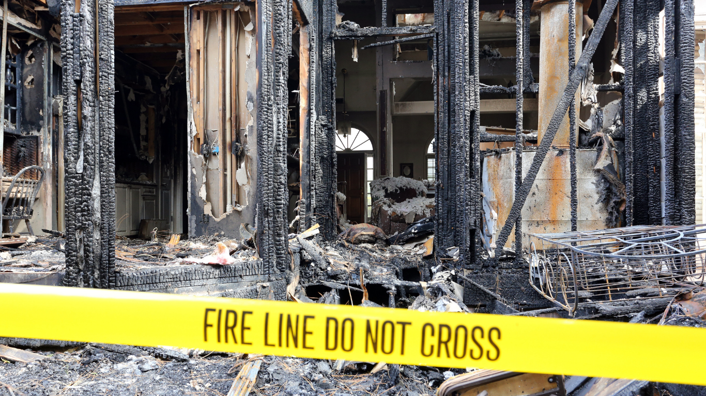

We provide fast-response fire damage restoration services that help Fort Worth homeowners recover safely after a house fire while protecting their property from further damage.
A house fire can leave homeowners overwhelmed long after the flames are extinguished. Smoke, soot, water damage, and structural concerns often continue affecting the property in the hours and days that follow. Knowing the right steps to take after a fire helps protect your safety, supports insurance claims, and speeds up the recovery process. Understanding the early stages of house fire recovery can make a difficult situation feel more manageable.
After a fire, safety should remain the top priority. Even if the visible flames are gone, the structure may still contain hidden hazards such as weakened flooring, unstable ceilings, electrical damage, or lingering smoke contamination.
Homeowners should only reenter the property once fire officials confirm it is safe to do so. Breathing in smoke residue or disturbing damaged materials without protection may create additional health risks. In many cases, utilities such as gas, electricity, and water should remain off until inspections are completed.
If emergency responders secure parts of the home, avoid moving damaged materials or entering restricted areas. Structural instability is common after fires, especially when heat has compromised framing or roofing components.
Once the property is safe to enter, documenting the damage becomes extremely important. Homeowners should take clear photos and videos of affected rooms, damaged belongings, and visible smoke or soot residue before cleanup begins.
Detailed documentation helps support insurance claims and provides restoration teams with a clearer understanding of the fire’s impact. Keep records of temporary expenses as well, including hotel stays, emergency supplies, and temporary repairs.
Fire damage often extends beyond the burned area itself. Smoke particles can travel throughout the property, affecting walls, ceilings, furniture, and HVAC systems. Fast assessment through professional fire damage restoration services helps identify hidden damage before conditions worsen.
Most homeowners contact their insurance provider shortly after securing safety. Early communication helps begin the claims process and allows adjusters to assess the property before repairs start.
Insurance companies typically request:
Keeping organized records helps reduce delays during the claims process. Restoration companies often assist homeowners by documenting moisture levels, soot contamination, and structural concerns to support accurate claim evaluations.
The American Red Cross also recommends securing important documents and contacting local support resources after residential fires.
Many homeowners are surprised to learn that water damage becomes a major concern after a fire. Firefighting efforts often leave behind soaked flooring, wet insulation, and standing water that can quickly lead to mold growth if not addressed immediately.
Smoke and soot residue also continue damaging surfaces long after the fire ends. Acidic soot particles may discolor walls, corrode metal surfaces, and leave persistent odors throughout the property. Professional drying and cleaning help prevent secondary damage from spreading further.
Specialized water damage restoration and smoke cleanup equipment remove trapped moisture while improving indoor air quality during recovery.
After a fire, portions of the property may remain exposed to weather, vandalism, or additional structural deterioration. Emergency board-up services and temporary roof tarping help secure vulnerable areas while restoration planning begins.
Broken windows, damaged roofing materials, and weakened exterior walls can allow rain, debris, and pests into the property if left unprotected. Fast mitigation reduces the likelihood of further repair costs and stabilizes the home during the insurance and restoration process.
Professional restoration services often include emergency stabilization measures designed to protect the property immediately after a disaster.
One of the biggest concerns after a house fire is whether the property can be restored safely. Homeowners want reassurance that smoke contamination, odors, and structural issues can be fully addressed before returning home.
Another major concern is the emotional stress tied to damaged belongings and disrupted routines. Fires affect more than physical structures — they interrupt daily life and create uncertainty about what comes next. Clear communication from restoration professionals helps reduce confusion during the recovery process.
Homeowners also worry about how long repairs will take. Restoration timelines vary depending on the severity of structural damage, smoke contamination, and reconstruction needs. Fast mitigation and organized planning often shorten recovery time significantly.
Professional fire restoration usually begins with emergency mitigation and property stabilization. After the initial assessment, restoration teams remove debris, extract water, clean soot residue, and begin structural drying.
Air scrubbers and odor removal equipment improve indoor air quality while cleaning crews treat affected surfaces. In some cases, damaged drywall, insulation, flooring, or framing materials must be removed and replaced.
Once cleaning and drying are complete, reconstruction begins. Coordinating mitigation and rebuilding through one restoration company often creates a smoother experience for homeowners and reduces delays between project phases.
Recovering after a house fire involves far more than cleaning visible damage. Smoke residue, hidden moisture, and structural concerns all require specialized attention to restore the property safely and completely.
If you’re looking for trusted help with house fire recovery in Fort Worth, SWAT Restoration provides 24/7 emergency response, smoke cleanup, water removal, and reconstruction services throughout North Texas. Our team works quickly to stabilize your property, document damage for insurance purposes, and guide you through every stage of restoration with clear communication and dependable support. When fire damage disrupts your home, having experienced professionals on your side helps make recovery less stressful and far more manageable.